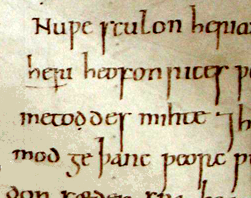

The Old English Alphabet
Posted: Sep 18, 2008 17:09;
Last Modified: Apr 04, 2021 12:04
Keywords:
Old English texts were copied in manuscripts by scribes. These scribes used an alphabet based on the Latin alphabet, but with some native additions and occasionally runes.
The most important of these additions were
- þ (thorn) and ð (eth), both of which were used to spell the sounds we now write using the Norman-influenced spelling th;
- ƿ (wynn), a runic character used for the sound we spell using w;
- æ (æsc, pronounced as Modern English ash), a vowel used to indicate the sound we now spell with a in words like bat and mat (the Anglo-Saxons also use the letter a, but only for sounds like that spelled using a in father and au in many non-Canadian pronunciations of aunt).
Otherwise the Old English alphabet contained more or less the same letters as the Modern English alphabet, though as we’ll see, several looked somewhat different. The main exceptions are our letters k, v, z, w, the Norman-derived spellings wh, th, sh, and also dg (as in edge), and some differences in the sounds associated with the letters c, g, f, s, and y (For a more detailed discussion of these sounds with example sound files, see my tutorial on the Pronunciation of Old English).
- In Old English k, and z were rarely used: c was used for sounds we now often spell with ch (e.g. church, OE ciric) and k (e.g. king, OE cyning); in many Old English text books, the distinction between the sounds in church and king are indicated by a dot: with a dot (ċ), the letter is to be pronounced as in church (OE ċyriċ); without it, it is pronounced as the k in king (OE cyning). You should know, however, that this convention is a modern invention and is not used in Anglo-Saxon manuscripts. The scribes themselves wrote c for all three sounds.
- z shows up mostly in foreign words like the biblical name Azarias. Otherwise s was used for both the sound we spell with s (or ss or c) in words like chess and rice and the sound we spell with z (or s) in words like seize and cheese.
- u and v were graphic variants of each other. Both were used for sounds we now often spell with a u. The letter f was used in Old English for both the sounds we now spell as f (as in wife) and those we spell using v (as in wives).
- The letter g was used for sounds like the g in God (OE god), the y in yard (OE geard), and a sound no longer found in modern English, but common in Dutch words like dragen (OE dragan). As with the letter c, textbooks commonly put a dot above g when it is used in words like ġeard (yard). They do not distinguish between the g in God and in words like dragan. However most examples of the latter turn up as w in Modern English (e.g. the Modern English equivalent of OE dragan and Dutch dragen is draw in the sense of ‘to pull’ as in British expressions such as ‘to draw a cart’ or even ‘to draw a bath’).
- The letter y is found often in Old English but never as a (semi-)consonant (e.g as in yard): In Old English it was used for a type of sound we no longer have in Modern English, a kind of umlauted u as in French tu; in later Old English it came to be essentially interchangeable with i. You can say this sound by making the sound spelled by ea in cheat and then rounding your lips. Interestingly, y was very commonly written with a dot above it by Anglo-Saxon scribes, though this is not found in modern textbooks.
- Modern English sh (like th and ch) is derived from Norman spelling conventions. In Old English, the sound is represented by sc (e.g. ship, OE scip). sc is also used for the sound we spell using sk (e.g. ask, OE ascian).
- cg is used for the sound we now usually spell using dg (e.g. edge, OE ecg).
- Modern English words beginning with wh are commonly spelled using hw in Old English: what, OE hwæt.
Although Old and Modern English have a large number of letters in common, the forms of these letter were not always the same. Some of the differences can be seen if you compare the image below, a detail from the late tenth/early eleventh century manuscript Winchester Cathedral I folio 81r showing the text of Cædmon’s Hymn, with its transcription in a modern computer font:

Nuƿe sculon heria
heri heofon rices ƿ
metoddes mihte ⁊h
mod ge þanc ƿeorc ƿ
(Winchester Cathedral I folio 81r. Manuscript reproduced with the permission of the Dean and Chapter of Winchester/Winchester Cathedral Library. Please to not reproduce without permission). The background to this image has been simplified slightly for pedagogical purposes. The unmodified version is available here.
In addition to these letters, Anglo-Saxon scribes also very occasionally use runes, as letters in their own right and occasionally to stand for a complete word. Thus the rune ᛟ (eþel) sometimes appears instead of the word eþel ‘estate’, ‘homestead’ in Old English texts. Most often, however, the use of runes in Old English manuscripts is ornamental or self-consciously literary.
Computers and the Anglo-Saxon alphabet.
All Anglo-Saxon letters, including þ, ð, and ƿ are represented in Unicode, the modern standard for encoding characters on a computer.
| Old English Character | Unicode Code Point | ||
| Minuscule | Majuscule | Lowercase | Uppercase |
| þ | Þ | U+00FE | U+00DE |
| ð | Ð | U+00F0 | U+00D0 |
| ƿ | Ƿ | U+01BF | U+01F7 |
A runic alphabet can be found in Unicode between U+16A0 and U+16F0.
On most modern computer systems, these characters can be accessed via a character map utility or, within a word processor, via the Insert Special Characters menu option. It is also possible to modify your keyboard to allow direct typing. See, for Linux, my article on creating custom keyboards. Commercial software allowing you to achieve similar effects is available for both Mac and Windows.
Here’s a recent (2020) article that shows you multiple ways of typing “special characters” in Windows.

Comment [4]
Gothic (Tue Sep 1, 2009 (13:52:22)) [PermLink]: Icy
Saxon (Thu Feb 17, 2011 (19:09:46)) [PermLink]: “the Anglo-Saxons also use the letter a, but only for sounds like that spelled using a in father and au in non-Canadian pronunciations of aunt”
I’m afraid that’s not right.
For instance, ‘Aunt’ is pronounced in many of the accents of the UK in exactly the same way as ‘ant’.
dan (Sun Mar 20, 2011 (19:33:12)) [PermLink]: Good enough, my Glaswegian parents also say [ænt]. Since my immediate audience is primarily Canadian, I hadn’t really got into other regional varieties, since we mostly know American broadcast is /ant/. But I’ll change it to “many non-Canuck”.
StephenB (Thu Jul 7, 2011 (16:43:43)) [PermLink]: I really enjoyed the Old English course; great information here too.
Commenting is closed for this article.

{kind=link}